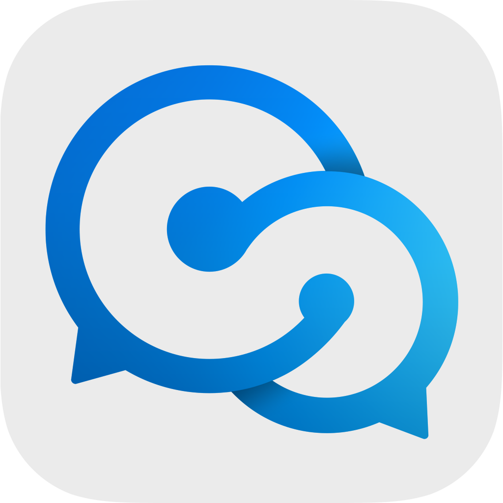

Hi, My name is Bhavya
and I am a passionate

Past Activities

Learning Ethical Hacking(2020)
Amidst the pandemic, my interest in cybersecurity led me to
explore Kali Linux through self-guided learning on platforms like
YouTube. Installing Kali Linux, I engaged in ethical hacking
exercises with friends' consent. However, after six months, I
realized my progress had plateaued and my journey ended.

Learning Web Development(2021)
After concluding my exploration in cybersecurity, I shifted my
focus to web development. Learning HTML, CSS, and JavaScript
through YouTube, I found it to be a highly useful skill. Following
instructional lectures, I honed my proficiency and applied my
skills to create projects for both personal use and for friends.

Built this portfolio(2022)
My first web development project was my portfolio, designed as a
central record for future creations. Despite academic pressures
post-pandemic, the portfolio showcases my commitment and
proficiency in web development, serving as a source of pride
despite the limited project output.

Built a real-time chat forum(2022)
At the request of a friend concerned about privacy from his parents, I developed a web-based chat forum for discreet communication with his girlfriend. While the platform served its purpose, their relationship ultimately ended in a breakup. Nevertheless, I successfully fulfilled my friend's request for a secure and private means of communication.

Built a news reading website(2022)
Responding to my father's advice on staying informed, I created a custom news website tailored to my preferences. This personalized platform not only provided a more accessible news experience but also helped me cultivate a consistent habit of staying updated on current affairs.

Started a Youtube channel(2023)
Passionate about anime, I noticed a lack of English-subtitled trailers for upcoming releases on YouTube. Leveraging my five years of experience in the anime community, I launched a YouTube channel dedicated to producing accurate, professionally subtitled trailers. This endeavor not only filled a gap but also prompted me to acquire skills in video and photo editing for enhanced content presentation.
Started a Tech Blog(2023)
In late 2023, the supposed discovery of LK99 as a room-temperature superconductor was debunked, highlighting widespread inaccuracies in tech reporting as I found many articles with incomplete information. This realization prompted the launch of my own tech blog, committed to providing concise and current industry news, addressing the prevailing issue of incomplete information.